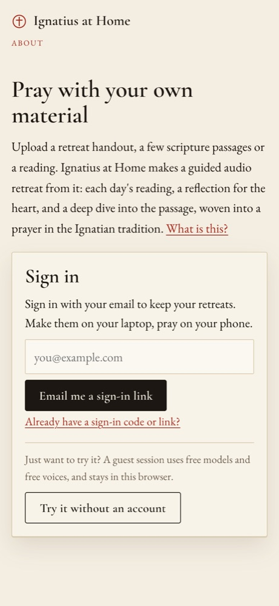
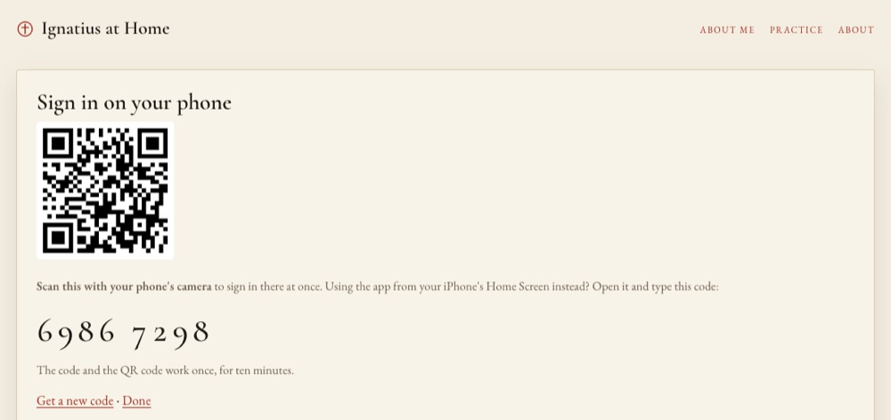

An email code or link, a guest session, or a QR code from the laptop to the phone.


app/auth.py asks Supabase whose it is (cached briefly). An email on ALLOWED_EMAILS is a full account; everyone else, and guests, use the free models.POST /api/handoff (already signed in) returns an 8-digit code and a QR link. Codes live in server memory for 10 minutes and work once.POST /api/handoff/redeem asks Supabase for a one-time token (admin generate_link, no email sent); the phone finishes with verifyOtp.Signing in never calls a model.
Email codes and links from the app's own templates, anonymous guest sign-in, and the admin API that mints the phone's one-time token.
Draws the QR code in the browser (MIT licence, served with the app). The QR link carries the code, so the phone's camera opens the app signed in.